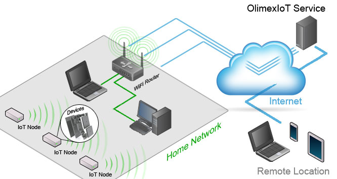

According to Wikipedia Internet Of Things (IoT) is
...the internetworking of physical devices, vehicles (also referred to as "connected devices" and "smart devices"), buildings and other items—embedded with electronics, software, sensors, actuators, and network connectivity that enable these objects to collect and exchange data.
The IoT allows objects to be sensed and/or controlled remotely across existing network infrastructure, creating opportunities for more direct integration of the physical world into computer-based systems, and resulting in improved efficiency, accuracy and economic benefit.
OlimexIoT is our attempt to create an easy-to-use Open-source software (OSS) and Open-source hardware (OSHW) low cost do-it-yourself (DIY) internet-of-things (IoT) platform. The main goal is to use well known technologies. This allows extending and integration to be easy achievable.
OlimexIoT is based on exchanging asynchronous JSON Messages between IoT Nodes and IoT Server through WebSockets or HTTP POST requests.
WebSockets allows bi-directional communication between the node and the server and is easy (by design) to pass through NAT Firewalls and Proxy Servers.
HTTP POST requests can be used in the case there is no need of bi-directional communication.
Each IoT Node builds separate connection to OlimexIoT Service. Node's firmware have to be build with SSL support. Client connects to the service to monitor the nodes. Direct connection to the nodes from outside is not possible.
See How to use our free OlimexIoT Service
Direct connection between IoT Nodes and IoT Server via existing wireless network. Firmware SSL support is not required. Possible scenarios for clients:
Client have to be able to connect to the server so firewall have to be configured to allow outside connections to the server. You will need:
Direct connection to the nodes from outside is not possible.
If you have VPN to your place then there is no need of SSL certificate.
This is the only scenario which allows direct connection to the nodes from outside.
See Build your own OlimexIoT Server
Based on your experience you can choose between
OlimexIoT can be easily integrated with other platforms if they can handle web requests.